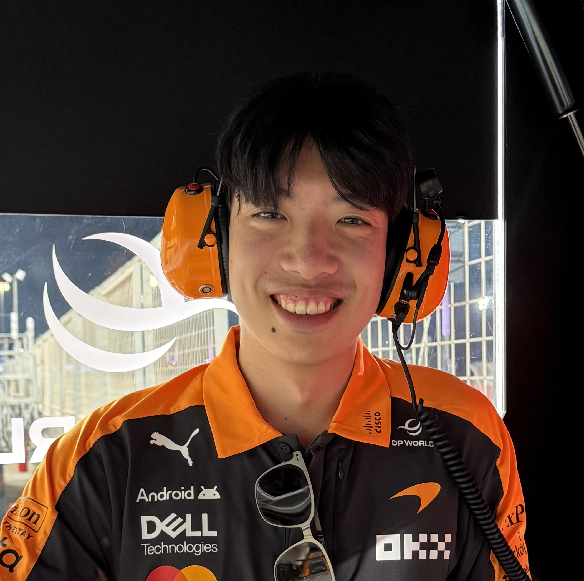

I'm a mechanical engineering student at Georgia Tech with experience spanning Formula One, aerospace, and electric vehicles. My interests lie at the intersection of engineering, software, data analytics, and quantitative decision making. Throughout my internships I've enjoyed building analytical tools, developing data pipelines, and designing hardware used in high-performance engineering environments.

My portfolio highlights projects ranging from mechanical design and composites to race strategy analytics, Python software development, manufacturing tooling, and systems engineering. I've worked on projects involving CAD, finite element analysis, hydraulics, telemetry analysis, SQL databases, Power BI dashboards, and full-stack engineering tools used in production and race operations.
Feel free to explore my portfolio or connect with me on LinkedIn.